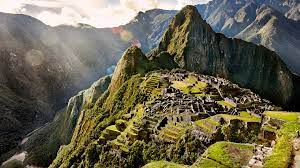
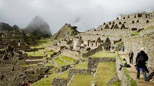
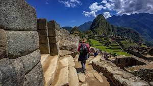

Ubicación
Machu Picchu se encuentra en la cordillera de los Andes, en la región de Cusco, al sureste de Perú. Está situada a unos 2,430 metros sobre el nivel del mar.
Historia
Machu Picchu fue construida en el siglo XV por los incas durante el reinado del emperador Pachacútec. Se cree que fue utilizada como residencia real y centro religioso. Sin embargo, la verdadera función de la ciudad aún no se ha esclarecido por completo, y se han planteado diversas teorías sobre su propósito exacto.
Galería



Significado
Machu Picchu es un importante símbolo de la cultura inca y un importante destino turístico en Perú. Es un lugar sagrado para muchos peruanos y atrae a visitantes de todo el mundo que desean experimentar la majestuosidad y el misterio de esta antigua ciudad.